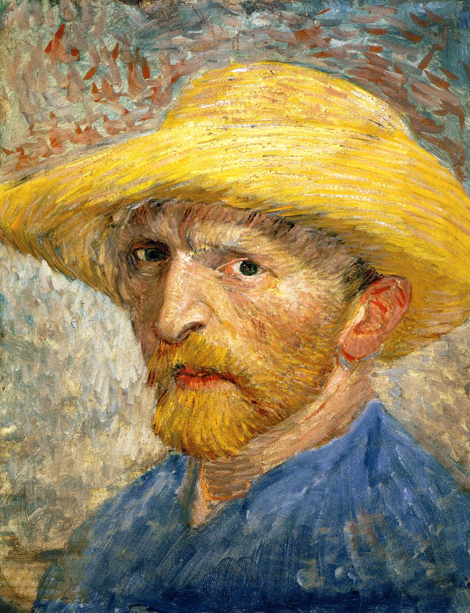
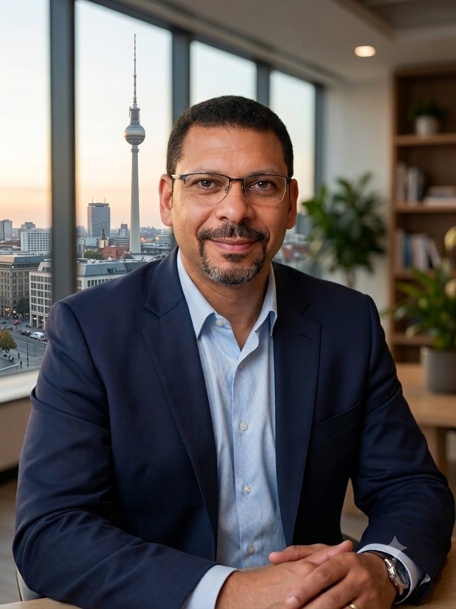

Vincent van Gogh
(1853–1890)
Die Bewältigung komplexer medizinischer, finanzieller und administrativer Herausforderungen kann sich oft überwältigend anfühlen und den Blick auf den eigenen Weg verstellen. Mein Ziel ist es, Ihnen die rechtlichen, administrativen und organisatorischen Lasten abzunehmen — damit Sie die Klarheit, Würde und Stabilität gewinnen, die Sie benötigen, um sich auf Ihre persönliche Weiterentwicklung zu konzentrieren. Indem wir Ihre Selbstbestimmung schützen und ein sicheres Fundament schaffen, entsteht der Freiraum, um das passende Umfeld für sich zu entdecken und ein erfülltes Leben aufzubauen.
Einwilligung in medizinische Maßnahmen, Kooperation mit Ärztinnen, Ärzten, Kliniken und Pflegediensten sowie die Organisation von ambulanter Pflege oder passenden Wohnformen—unter strikter Wahrung der individuellen Selbstbestimmung.
Regelung finanzieller Angelegenheiten, Kontoführung, Sicherung von Sozialleistungsansprüchen (z. B. SGB II, V, XI, XII) sowie die Klärung von Renten- und Versicherungsangelegenheiten.
Sicherung und Erhalt des Wohnraums, Vertretung gegenüber Vermietern, Behörden und Ämtern sowie die Organisation notwendiger Wohnraumanpassungen oder Umzüge.
Die Bewältigung entscheidender Karriereübergänge und akademischer Meilensteine erfordert mehr als das bloße Erfüllen von Vorgaben—sie erfordert Klarheit, strategische Ausrichtung und Selbstreflexion. Ganz gleich, ob Sie zwischen Wissenschaft und Wirtschaft wechseln, komplexe Entscheidungsprozesse entwirren oder sich in einem neuen Bildungssystem orientieren: Echter Fortschritt entsteht dann, wenn Sie Ihre individuellen Stärken mit dem richtigen Umfeld in Einklang bringen. Mein Coaching hilft Ihnen, administrative und strategische Komplexität zu reduzieren. Es bietet eine strukturierte Begleitung, damit Sie fundierte Entscheidungen treffen, akademisch überzeugen und eine nachhaltige berufliche Zukunft in Deutschland und Europa aufbauen können.
Begleitung beim Wechsel von der Wissenschaft in die freie Wirtschaft (oder umgekehrt), Profilschärfung und Bewerbungsstrategien—inklusive komplett gefördertem Coaching (per AVGS-Gutschein der Agentur für Arbeit/des Jobcenters in Kooperation mit zertifizierten Partnern).
Strukturierung von Forschungsprojekten, Unterstützung bei Exposés und Anträgen, Begleitung bei der Suche nach Promovierenden-Betreuung (Supervisor-Matching) sowie Vorbereitung auf Disputationen.
Spezialisierte Unterstützung für internationale Studierende und Wissenschaftler/-innen bei Zulassung, Studienwechsel und Fortführung des Studiums in Deutschland und der EU. Die Leistungen umfassen die Zuordnung von Qualifikationen, Universitäts-Bewerbungsstrategien, Orientierung bei Visa- und Verwaltungsfragen sowie die soziokulturelle Integration im europäischen Hochschulwesen.
Systematische Bewertung von Optionen bei Zielkonflikten, objektive Auflösung von Blockadesituationen und strukturierte Entscheidungsfindung an kritischen beruflichen und persönlichen Wendepunkten.
Als der Film „Joker“ in die Kinos kam, projizierten viele Zuschauer ihre eigenen Empfindungen unwillkürlich auf Arthur Fleck. Sie sahen seinen tragischen Abwärtsstrudel durch die Brille ihrer eigenen, stillen Kämpfe und fühlten sich heimlich verstanden.
Doch diese Reaktion übersieht eine viel unbequemere Wahrheit: Die meisten von uns sind nicht der tragische Antiheld, der an den Rand der Gesellschaft gedrängt wird. Wir sind die gleichgültigen Bürger von Gotham—die Zuschauer, die schweigenden Systeme und die alltäglichen Beobachter, deren kollektive Gleichgültigkeit überhaupt erst die Voraussetzungen für einen solchen Zusammenbruch schafft.
Die Gesellschaft nutzt Stempel wie „verrückt“, um Menschen abzutun, die außerhalb der vorgegebenen Muster denken. Unsere Geschichte ist voll von Visionären und Pionieren, die von ihrer Umwelt als geisteskrank oder gesellschaftsunfähig abgestempelt wurden:

(1853–1890)
(1856–1943)
(1864–1943)
Echte Orientierung bedeutet nicht, sich selbst zu verbiegen, um in eine Form zu passen.
Es geht darum, sich selbst zu entdecken—Räume und Umfelder zu finden, in denen Sie aufblühen können, und Ihre Kräfte gezielt für Ihren eigenen Weg einzusetzen. Das ist meine Überzeugung und das Versprechen, für das ich mich in meiner Arbeit einsetze.

Dr. Emadeldin Fawaz ist zertifizierter Berufsbetreuer und freiberuflicher Coach. Er verbindet ein fundiertes akademisches Fundament mit über zwei Jahrzehnten praktischer Führungserfahrung in angewandter Wissenschaft, Wirtschaft und ethischer Interessenvertretung.
Seine Arbeitsweise basiert auf höchster professioneller Integrität, strukturierter Handlungsfähigkeit und tiefem Respekt vor der individuellen Selbstbestimmung. Ob bei der rechtlichen und administrativen Vertretung gegenüber Gerichten und Behörden oder bei der strategischen Begleitung komplexer Lebensentscheidungen: Dr. Fawaz schafft klare Strukturen, die Stabilität und neue Handlungsspielräume ermöglichen.
Über 10 Jahre Erfahrung am US Naval Medical Research Center (NAMRU-3) als Clinical Project Manager und gewähltes IRB-Board-Mitglied (Ethikrat). Spezialisiert auf die Prüfung der Einwilligungsfähigkeit, den Schutz von Persönlichkeitsrechten und die Einhaltung ethischer Standards (Good Clinical Practice) bei vulnerablen Personengruppen.
Mitglied im Bundesverband freier Berufsbetreuer (BVfB) und ausgebildeter Verfahrensbeistand (§ 158 FamFG). Fundierte Praxiskenntnisse im Sozialrecht (SGB II, V, XI, XII), im Vermögens- und Gesundheitsmanagement sowie im behördlichen Schnittstellenmanagement.
Langjährige Praxis als Dozent, Senior Consultant und Agile Transformation Manager (u. a. adesso SE, SD&C). Ausgeprägte Expertise in strukturierter Gesprächsführung, Deeskalation und der Lösung komplexer Entscheidungskonflikte.
Eine rechtliche Betreuung wirft zu Beginn meist viele Fragen auf. Schreiben Sie mir gerne eine Nachricht oder rufen Sie mich an – wir besprechen Ihr Anliegen in Ruhe und vertraulich.
Bürozeiten: Mo–Do von 09:00 bis 12:00 Uhr
Termine nach vorheriger Vereinbarung.
E-Mail senden